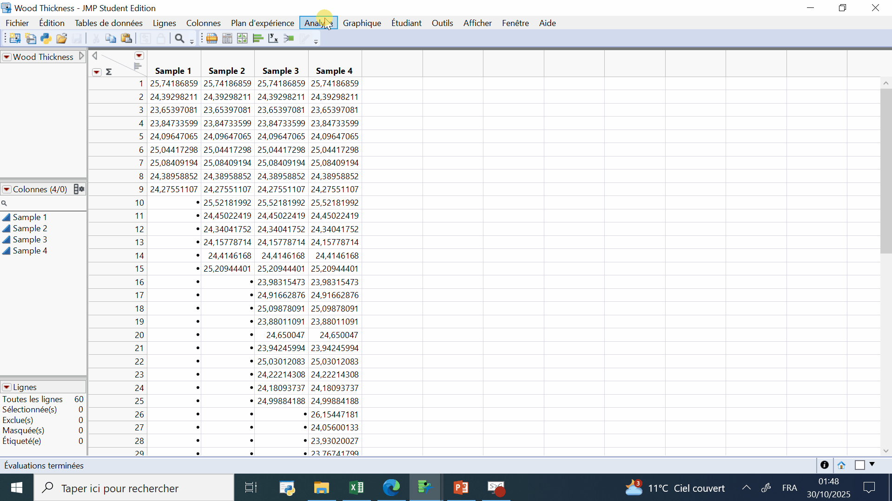

Procédure 23 · Estimation
Intervalle de confiance de la moyenne et de l’écart-type
Procédure pas à pas
- Ouvrir Analyse → Distribution.
- Placer l’épaisseur du bois dans Y, Colonnes.
- Valider et consulter les statistiques et l’intervalle de confiance de la moyenne.
- Dans le triangle rouge de la variable, choisir Intervalle de confiance.
- Définir le niveau de confiance souhaité (95 % dans l’exemple).
- Afficher l’intervalle de confiance de l’écart-type.
Jeu de données / résultat
Jeu cité : Wood Thickness
Point de vigilance : L’intervalle de l’écart-type fondé sur la loi du χ² suppose la normalité de la population.
Démonstrations animées dans JMP
Animations extraites du PowerPoint « Lean Six Sigma avec JMP 003 ». Elles complètent les étapes numérotées ci-dessus.
